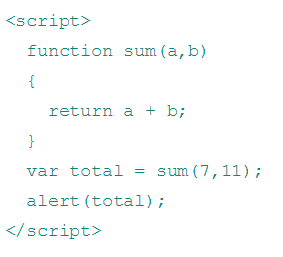

Web Programming
Web programming refers to the writing, markup and coding involved in Web development, which includes Web content, Web client and server scripting and network security. The most common languages used for Web programming are XML, HTML, JavaScript, Perl 5 and PHP.
Learn MoreJavaScript is a programming language commonly used in web development.JavaScript is a client-side scripting language, which means the source code is processed by the client's web browser rather than on the web server. This means JavaScript functions can run after a webpage has loaded without communicating with the server. For example, a JavaScript function may check a web form before it is submitted to make sure all the required fields have been filled out. The JavaScript code can produce an error message before any information is actually transmitted to the server.
Below is an example of a basic JavaScript function that adds two numbers. The function is called with the parameters 7 and 11. If the code below were included in the HTML of a webpage, it would display the text "18" in an alert box.
